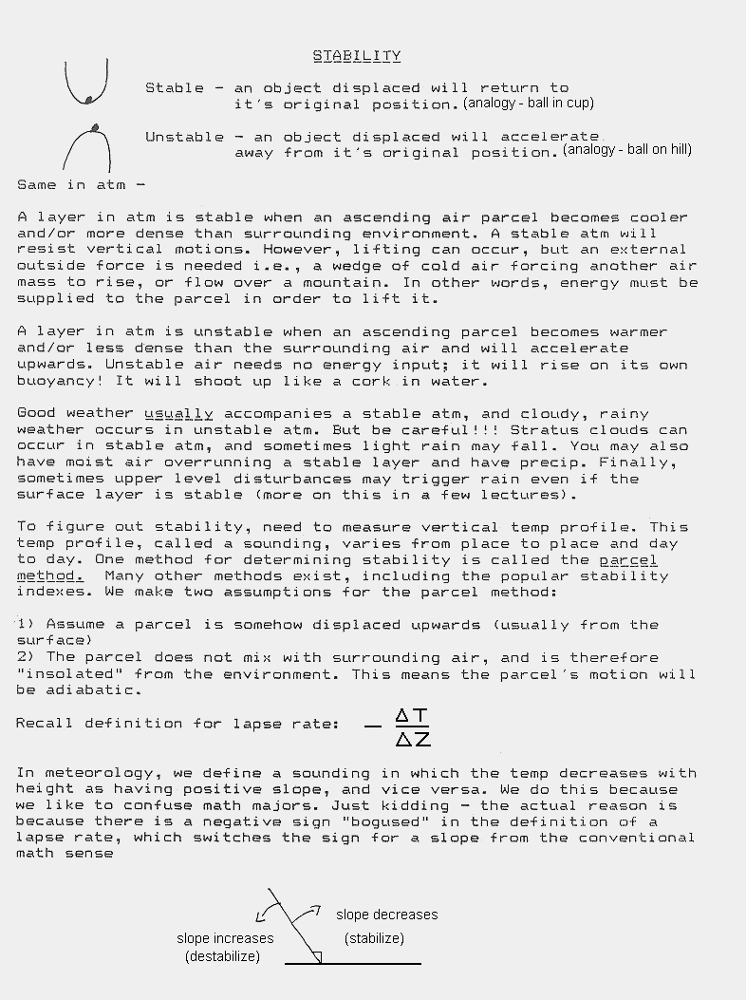
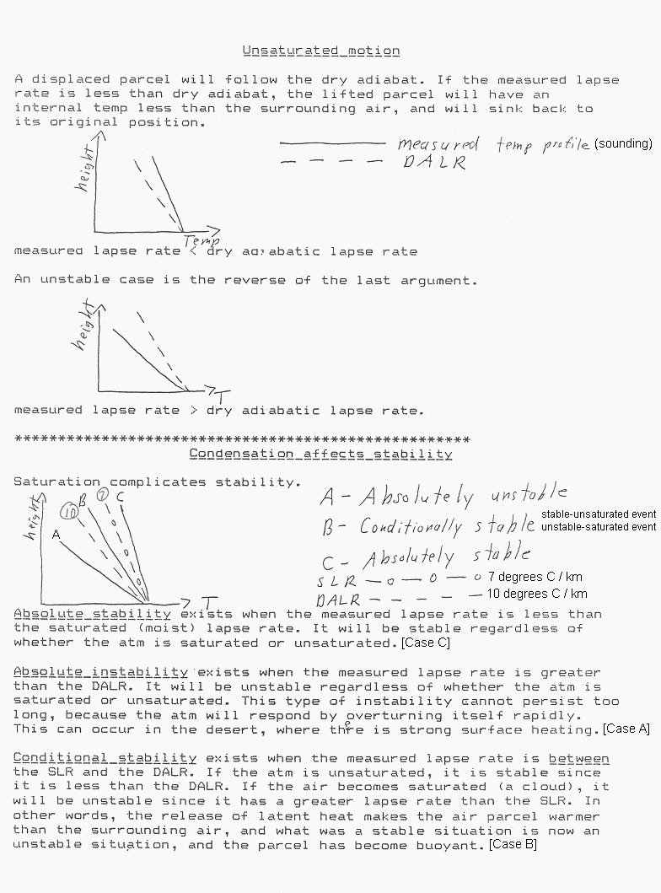
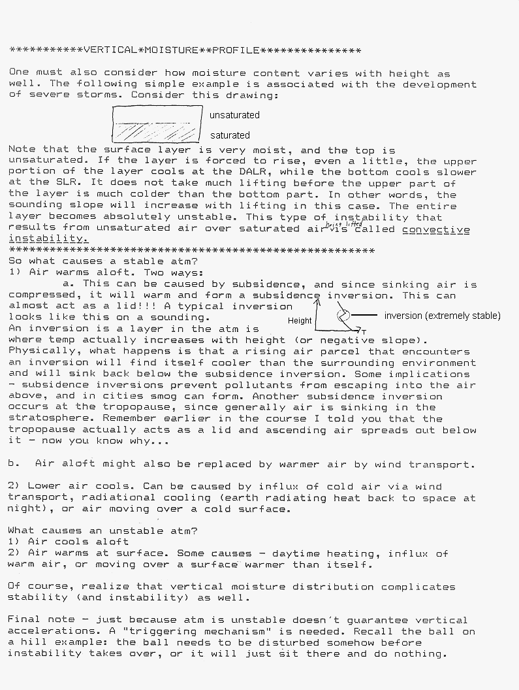
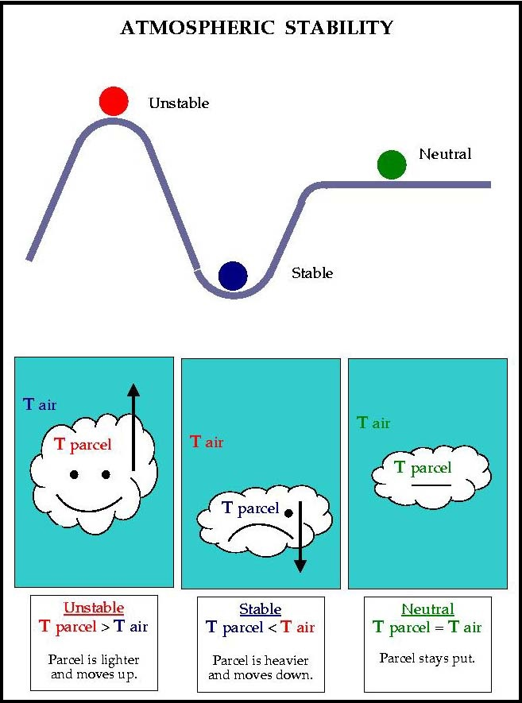
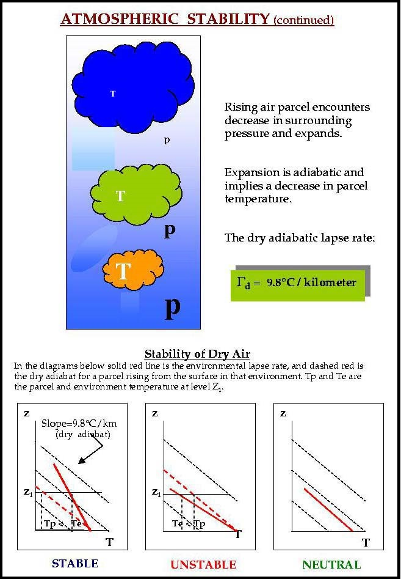
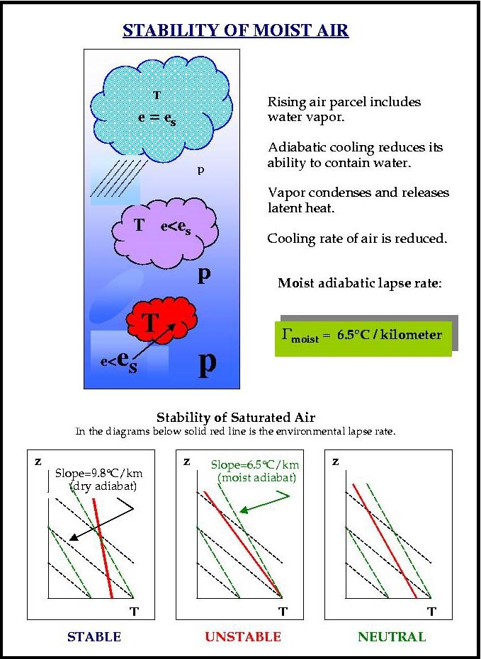
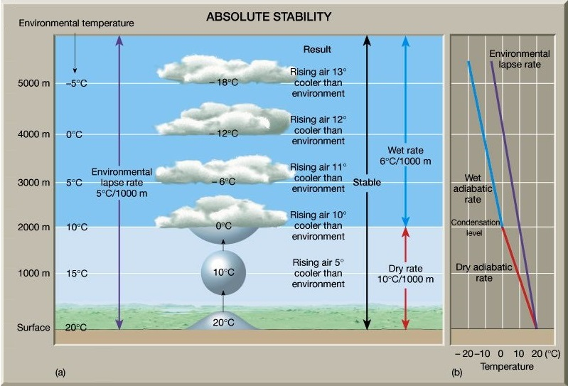
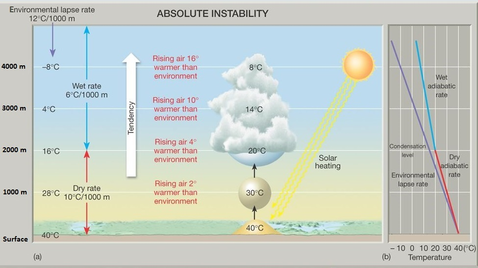
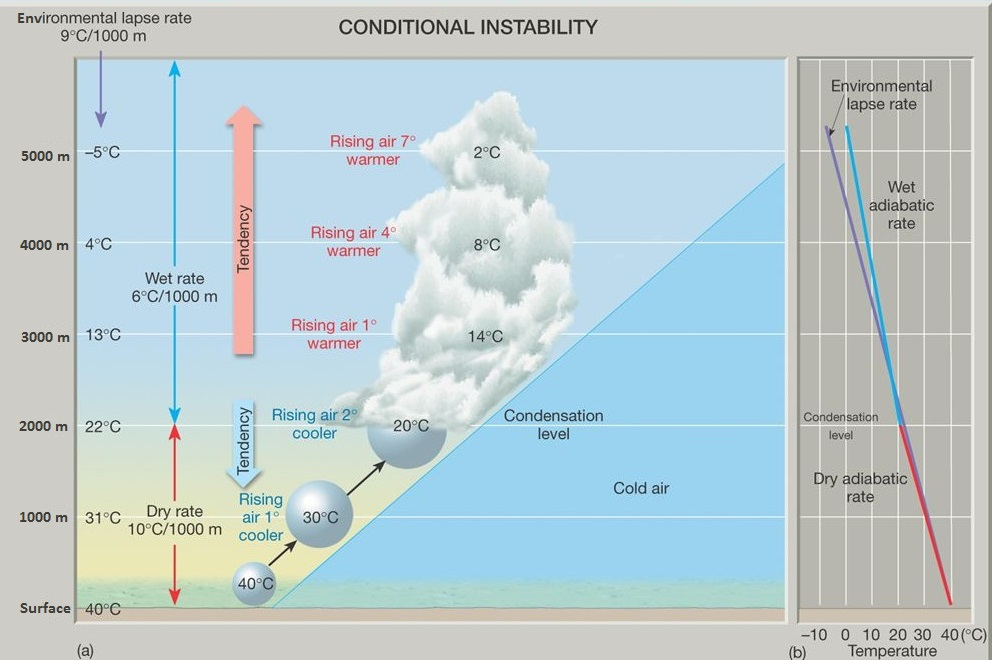

ZHU Training Page archive · Stability and Cloud Development — Tutorial 2 · Source: http://www.weather.gov/source/zhu/ZHU_Training_Page/stability/stability.html · Captured 2026-08-19 06:00 UTC








